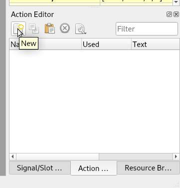
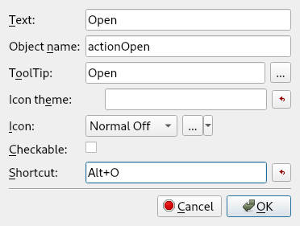
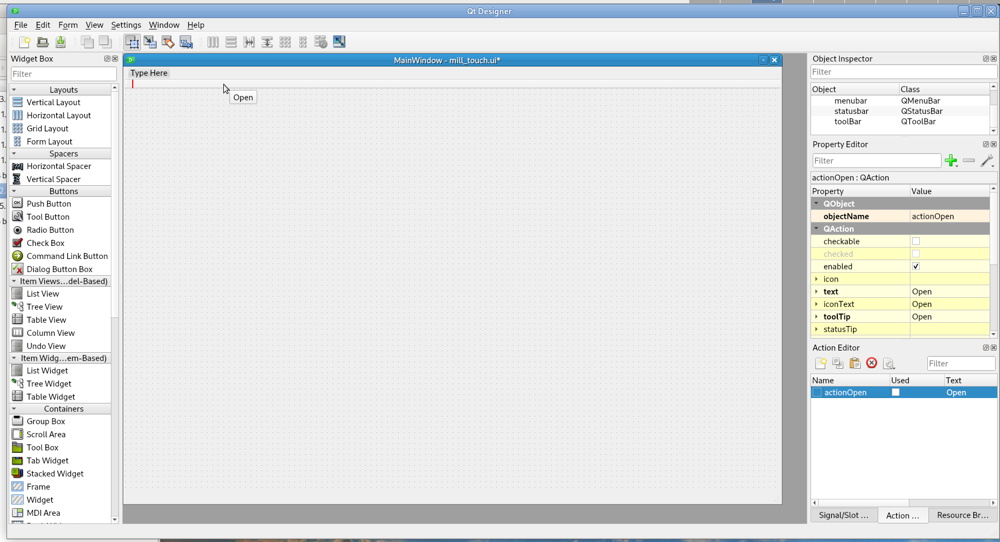
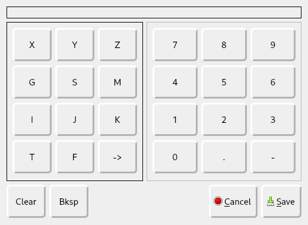
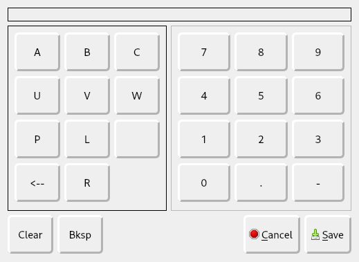
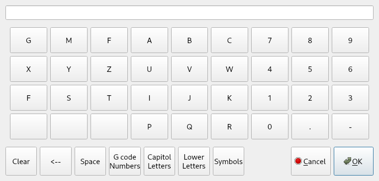
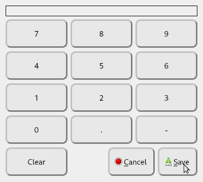
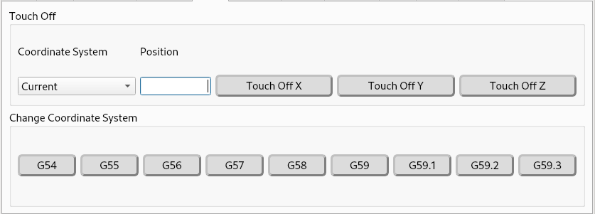

Touch Screens¶
Some entry widgets like MDI and Touch-Off have a touch-screen popup available to make it easier for those users to enter the data.
Tool Bar¶
To add a button to the tool bar without having a menu item that creates an action, you just have to create the action yourself
The action creating window, when you type in the Text name, the Object name is created for you
Warning
Make sure the Object name matches the Action Name created when you create a menu item - see the Menu section for the full list of Action Names.
Now you just drag the action into the tool bar to create a new tool bar button
Another option is to just use QPushButtons in a QFrame, as every menu action has a QPushButton as well that executes the same function.
MDI¶
To enable the popup entry dialogs for the MDI entry, the QLineEdit object name must be mdi_command_le and the Dynamic Property input must be nccode for the NC codes popup or keyboard for a full keyboard popup.
The G codes dialog will appear when you touch the MDI entry box
The arrow buttons change the letters section to different letters
The full keyboard
Touch Off¶
The Coordinate System Touch-Off offset is a QLineEdit named touchoff_le. To enable the number pad popup for the offset entry, add a Dynamic Property named input and set the value to number
Touch-Off:
Tool Touch-Off¶
The Tool Touch-Off offset is a QLineEdit named tool_touchoff_le. To enable the number pad popup for the offset entry, add a Dynamic Property named input and set the value to number.
Spin Boxes¶
QDoubleSpinBox and QSpinBox can use the popup numbers keypad by adding a Dynamic Property named input and setting the value to number. If you enter a float value for a QSpinBox the value will get converted to an integer
Line Edits¶
A QLineEdit can have a popup entry for numbers, G codes, or a full keyboard. Add a Dynamic Property named input and set the value to one of these number, nccode, or keyboard.